Early pictures of the game from a 1998 magazine cover CD and from January 2001, the original websites, restored from copies at the Internet Archive, and the models that were left unused in the game data. The websites are shown as they were – with frames, period HTML and, where noted, Flash. Only archived material is shown: images that were never preserved are marked as missing.
Score CD Finds 1998
Ten pictures from the cover CD of the Czech games magazine Score, issue 59 (November 1998) – almost three years before the release. They are the large pictures of the developer's first Zax page on reflexive.net (December 1998): seven illustrations and three early screenshots. The Internet Archive kept that page, but not these pictures. On the disc they are stored in the NGF image format, which the CD also uses for its other pictures; here they are converted to PNG without loss, in their original size of 640×480.
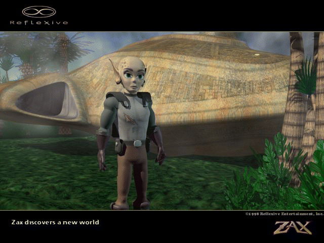
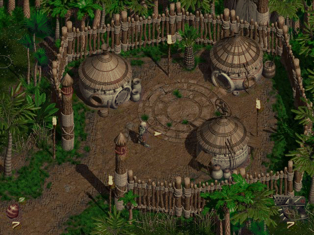
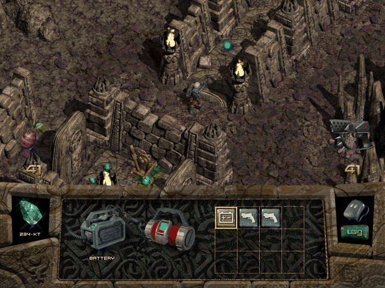

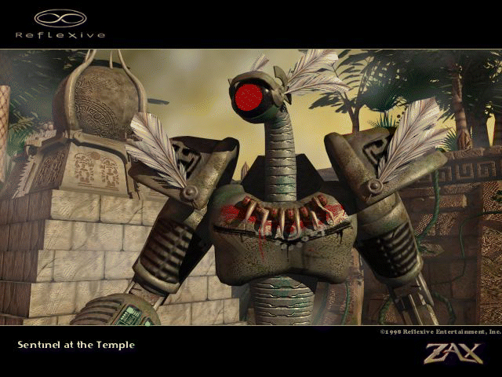
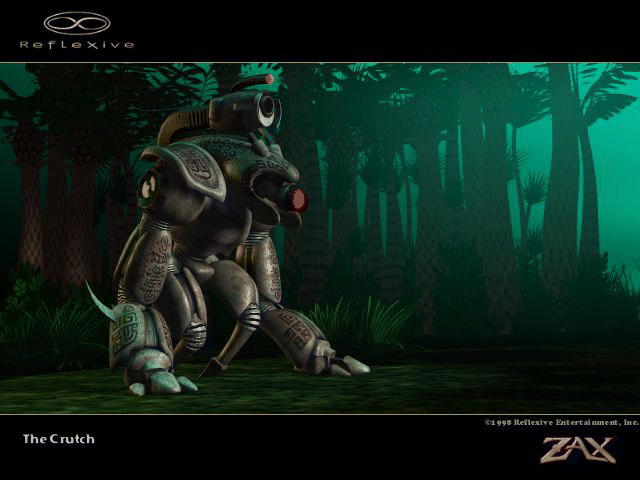

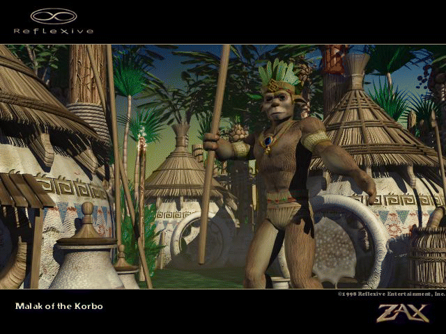

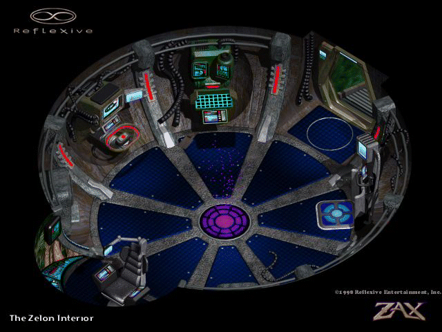
The text that came with the pictures:
Velmi nadějně vyhlížející sci-fi adventuru ZAX prezentovali na Internetu před nedávnem marketingoví odborníci firmy Reflexive Entertainment. Její vydání je sice naplánované až na konec příštího roku,při spatření těch úchvatných renderovaných - a přece tak reálných - obrázků ze hry mi všk srdce napovídá, že tady by se mohl skrývat jeden z nejpotencionálnějších produktů příští zimy. Když budeme všichni společně věřit a doufat, třeba se ZAX dostane na herní trh dříve a my tak budeme moci konečně odložit slintátko, uchopit myš a dát se do hraní. Už aby to bylo.
In English: “The very promising-looking sci-fi adventure ZAX was recently presented on the Internet by the marketing experts of Reflexive Entertainment. Its release is planned for the end of next year, but seeing these stunning rendered – and yet so realistic – pictures from the game, my heart tells me this could be one of the most promising products of next winter. If we all believe and hope together, maybe ZAX will reach the shops sooner, and we can finally put away the bib, grab the mouse and start playing. Can't wait.”
Screenshots January 2001
Seven early screenshots, with the old status bar: the pictures of the developer's screenshot page on reflexive.net in 2001. The Internet Archive kept the page, but not the pictures. The same series was shown by GameSpot in its First Look of 2001-01-05; the pictures here are put together from several copies of it, without logos (the first still shows GameSpot's “G”, no GameSpot copy of the seventh was preserved). The order on the developer's page is not known; this is the order of GameSpot.
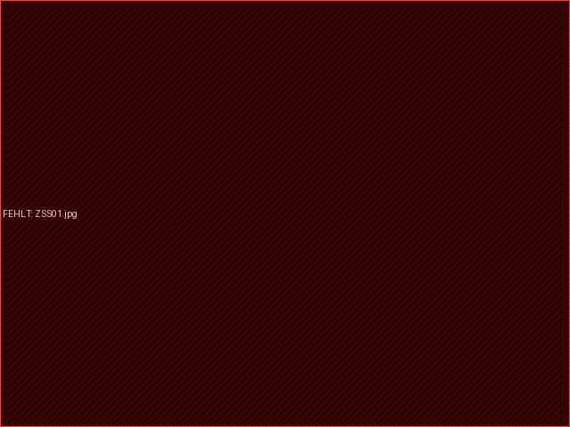
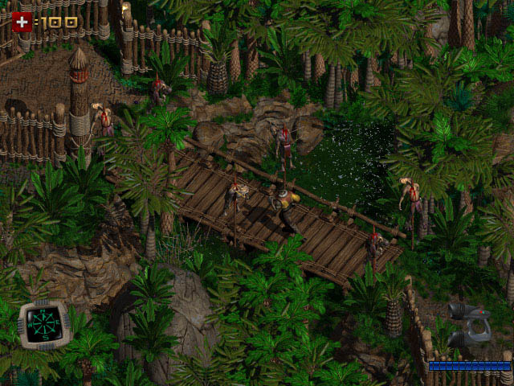
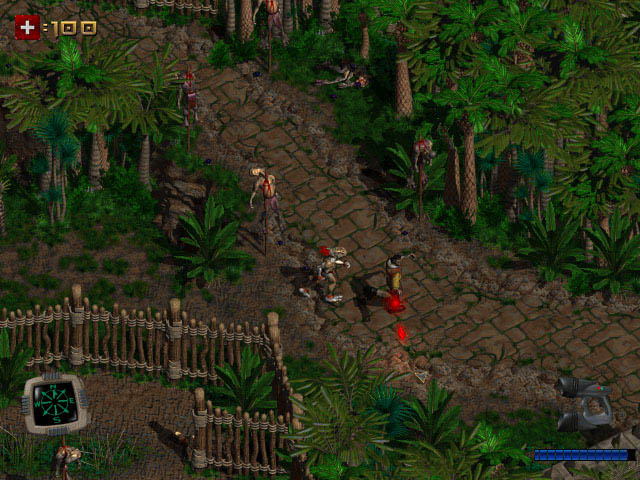
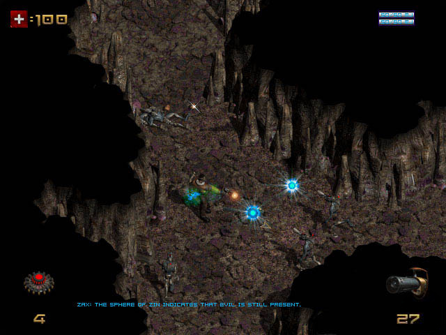
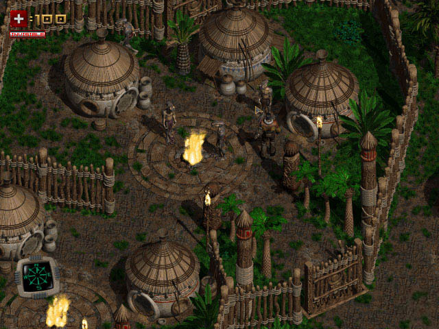
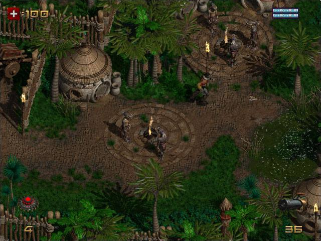
Websites
reflexive.net/Zax – December 1998
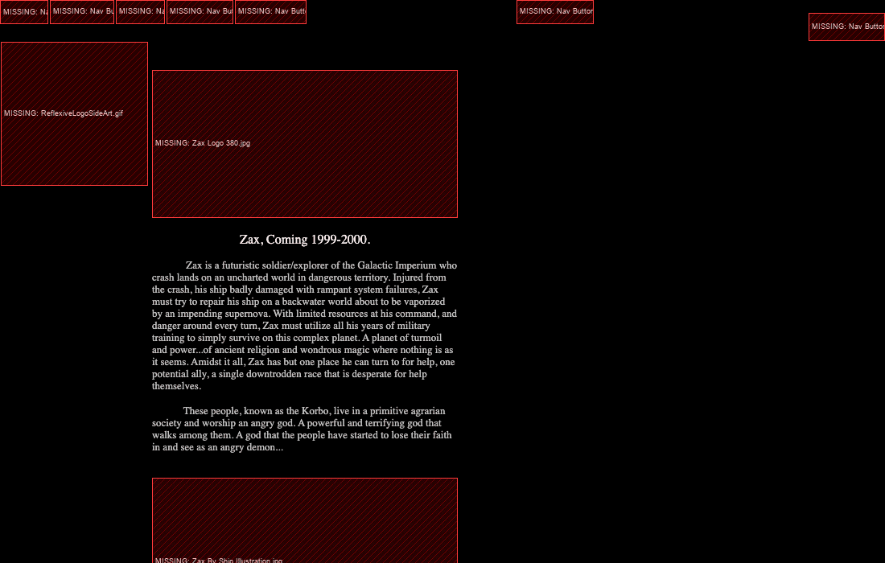
The first Zax page of the developer: “Zax, Coming 1999-2000”, with the early story of a soldier of the Galactic Imperium. Only the text was preserved; its ten large pictures – seven illustrations and three screenshots – are the ones found on the Score cover CD, and its small pictures are scaled down from them; the other images are marked as missing.
reflexive.net/Zax – January 2001

The developer's site during production. Most of the layout graphics were not preserved; missing images are marked. The seven screenshots were not preserved either: they are shown from the same series on GameSpot (2001-01-05), the order is not known.
reflexive.net/Zax – April 2001

The stone medallion design with Zax and the rune chain. Some frame graphics were not preserved; missing images are marked.
reflexive.net/Zax – December 2001
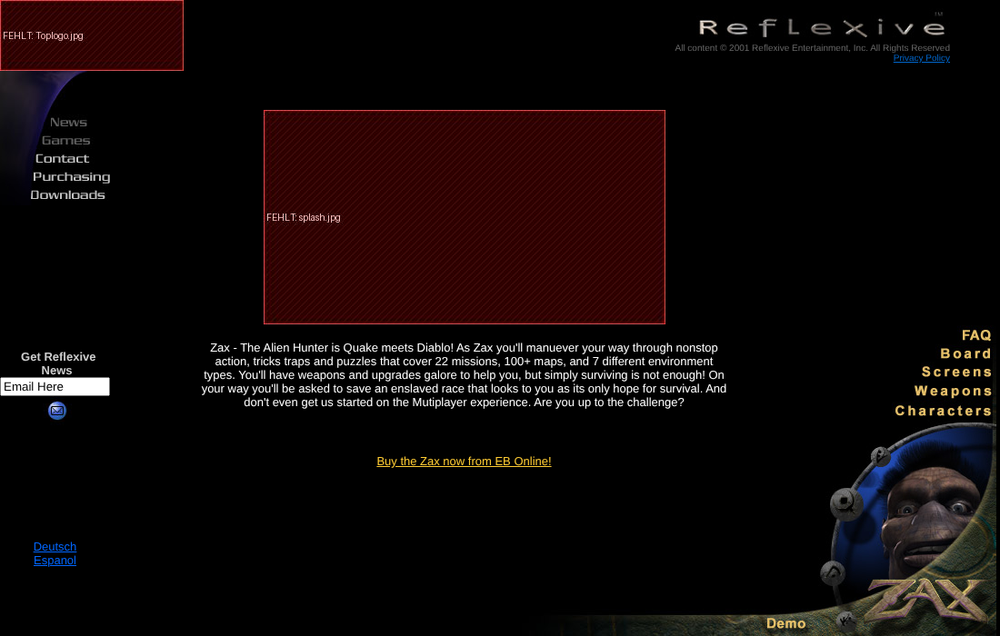
The release version with FAQ, demo page and the mirrored navigation.
reflexive.net – 2002 to 2003
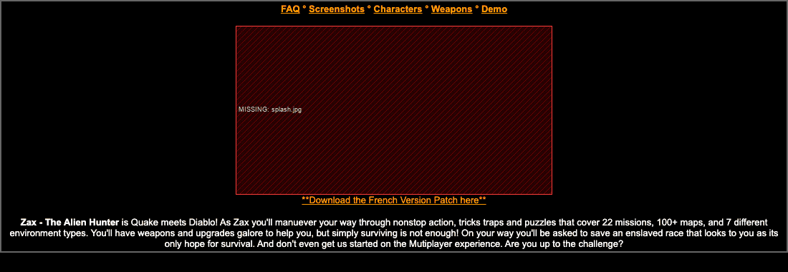
The short Zax page on the developer's site after the release, with FAQ, characters, weapons, demo and the French patch. Of its screenshot gallery seven full-size pictures were preserved; four more are shown from jowood.com, which used the same files.
Screenshot pages (their overview page was not preserved): 00, 01, 02, 04, 05, 06, 07, 08, 09, 10, 11, 12, 13, 14, 15, 16, 17, 18, 19, 20, 21, 22, 23, 24, 25, MP01, MP02, MP03, MP04, MP05, MP06, MP07, MP08, MP09.
zax-game.com – 2002 to 2004

The official JoWooD site in English and German. Navigation and banner are the original Flash files, played with the Ruffle emulator. Files that were never archived on zax-game.com come from JoWooD's mirror zax.jowood.com.
Pages that were reached through Flash menus that were not preserved: features, Features (German), heroes, enemies, weapons, screenshots, links. All heroes, enemies and weapons are linked from The Game.
jowood.com – January 2003
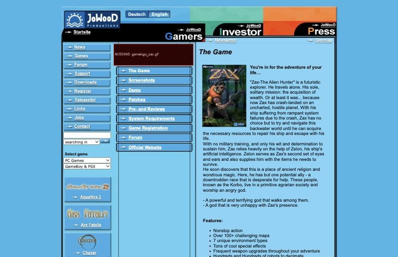
The game's pages on the publisher's site in English and German: the game, screenshots, demo, patches, reviews, system requirements and registration. Links to other JoWooD pages lead to the Internet Archive; the Zax logo was not preserved, the forms are disabled. Screenshots never archived at their own address come from the files of the same name elsewhere on jowood.com.
Unused Content
Models in the game data (DATA.dat) that the game never uses: no level, script, object definition or the executable refers to them. Each picture is the first frame of the model, rendered straight from the game files.
Environments
Cave
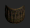
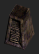
General


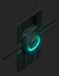

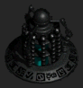


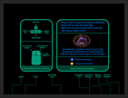

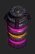
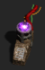
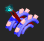


Hydro Plant Interior


Jungle
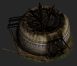

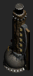

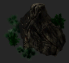
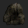


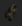
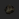


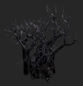


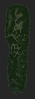
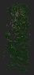

New Zax Ship

Targ Dens
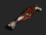
Under Temple

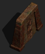
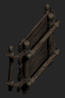
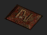
Volcanic Pits
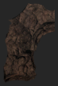


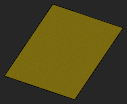
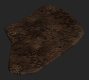

Zax Ship
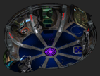

Zellon Outside

59 models of the category Environments, none of them used by the game.
Multiplayer
Player Icons
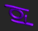
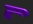
16 models of the category Multiplayer, none of them used by the game.